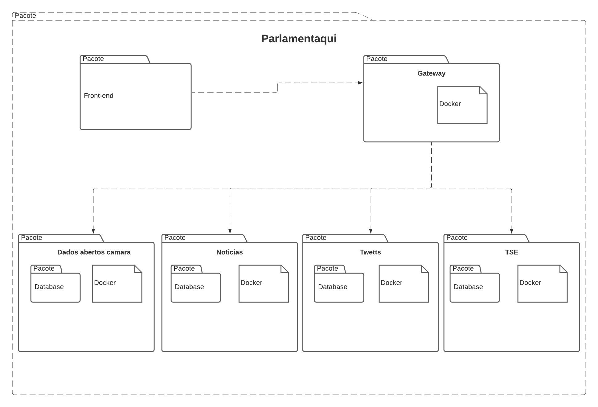
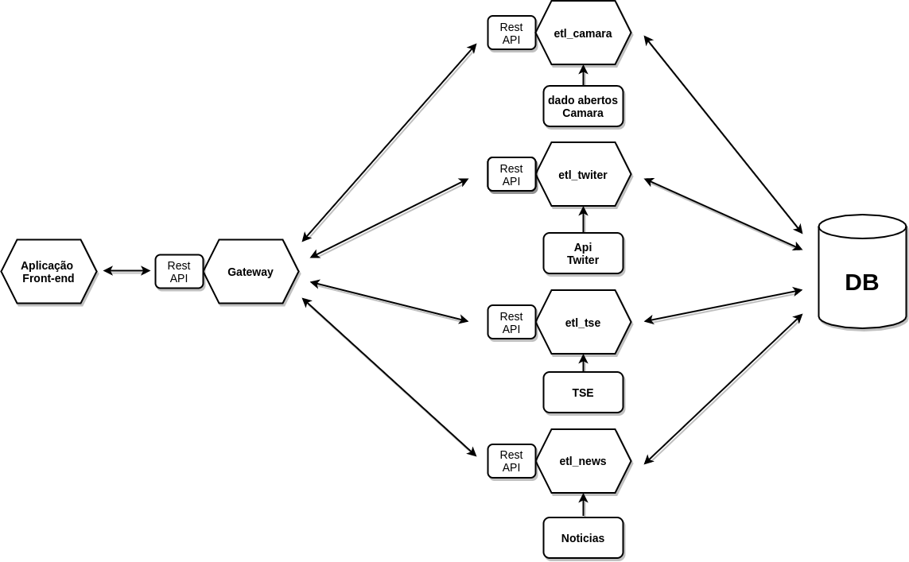
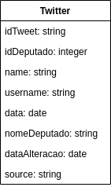
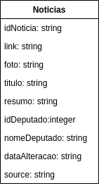

Documento de Arquitetura
| Data | Versão | Descrição | Autor |
|---|---|---|---|
| 01/03/2021 | 1.0 | Criação do documento de arquitetura | Lucas Machado |
| 13/03/2021 | 1.1 | Adicionando dicionário de dados | Lucas Machado |
| 22/03/2021 | 1.2 | Atualiizando atributos | Lucas Machado |
| 23/03/2021 | 1.3 | Atualizando arquitetura | Lucas Machado |
| 23/03/2021 | 1.4 | Adicionando referência sobre banco compartilhado entre microserviços | Lucas Machado |
| 12/04/2021 | 1.5 | Adicionando proposição | Lucas Machado |
1. Introdução
1.1 Objetivo
Este documento tem como finalidade mostrar uma visão geral sobre a arquitetura e ferramentas utilizadas no projeto Parlamentaqui.
1.2 Escopo
O Parlamentaqui tem como objetivo ser uma plataforma web responsiva que possibilite visualizar perfis de deputados contendo noticias, dados dos mesmos e coisas relevantes a um deputado, além de mostrar twittes recentes desses deputados caso possuam a rede social.
1.3 Definições, Acrônimos e Abreviações
- API: Application Programming Interface.
- Framework: Conjuntos de funções e componentes pré definidos.
- ETL: Extract, Transform and Load
2. Representação de Arquitetura
O projeto foi modelado seguindo a arquitetura de microserviços utilizando API's para realizar a conexão entre os serviços e o frontend da aplicação.
A arquitetura de microserviços foi escolhida por ser altamente escalável, pela acessibilidade para os desenvolvedores sendo mais fácil entender os serviços individualmente e por consequentcia os ciclos de desenvolvimentos poderem ser mais rapidos. Estes fatores já poderiam ser suficientes para a escolha desta arquitetura no projeto mas ainda resta a maior resiliencia do projeto, ou seja o projeto fica mais tolerante a falhas, um exemplo disso é caso ocorra alguma falha em um dos serviços isso não afeta os outros pois cada um deles funciona independente do outro.
Com todos os ambientes e coordenando-os, construimos uma arquitetura de Microserviços integrada realizando o processo de ETL de forma correta e assim ao fim do projeto sejam apresentados dados relevantes para o nosso usuário final.
2.1 Arquitetura de Microserviços
A arquitetura orientada a micro serviços foi escolhida para este projeto por motivo das suas vantagens levando em relação a estrutura monolítica, dentre elas estão:
- Resiliencia ou seja o projeto fica mais tolerante a falhas.
- Altamente escalável
- Otimização da utilização da infraestrutura.
- Diminuição da complexidade de manutenção.
2.2 Processo de ETL
O processo de etl (Extract, Transform and Load) em si é um processo de extração de dados, e após essa extração há um tratamento destes dados e por fim o carregamento deles em uma base de dados.

Na fase de extração os dados podem vir das mais diversas formas além de ocorrer casos onde existem mais de uma fonte de dados. Por esses motivos é necessário na fase seguinte que é transformar esses dados, pegando apenas a parte que é interessante para o nosso produto deizando livre de inconsistencias e assim deixando os dados compativeis com as regras de negócio que foram definidadas para o nosso projeto.
Com esse procedimento realizado corretamente somente deverá ocorrer o carregamento destes dados no banco de dados.
2.3 Tecnologias
- React
- Python Flask
- Docker
- MongoDB
- Travis CI
- SonarCloud
- Github
3. Metas e Restrições da Arquitetura
3.1 Metas do Software Parlamentaqui
- Dar acesso a uma home com as últimas interações de políticos no twiter / perfis de politicos e atividades relacionadas (ordenação de acordo com atividades recentes);
- Mostrar projetos votados recentemente, com informações sobre os projetos em seu perfil.
- Possibilitar o compartilhamento inteligente.
Para mais informações vá no documento redigido a partir do lean inception que contém detalhadamente as metas do projeto.
3.2 Restrições da Arquitetura
- O deputado possuir a rede social do twiter.
- As noticias com o deputado citarem seu nome em algum trecho da noticia.
Diagrama de pacotes

Acima é demonstrada a implementação geral dos pacotes do projeto Parlamentaqui.
4. Arquitetura dos Serviços e visão de Implementação
4.1 Visão Geral

4.2 Microserviços e camadas
A arquitetura e sua versão atual está particionada em:
- Front-End
O front-end é a fronteira é responsável por incorporar os dados armazenados fornecidos pelo Gateway apresentando os mesmos para o usuário final.
- Gateway
Fronteira responsável pela junção de todos os endpoints em somente um local, é o local responsavel por persistir e manter os dados relevantes para o produto. Através de uma API, disponibiliza os dados para o Front-End.
- Dados abertura camara
O "Dados abertura camara" é a fronteira responsável por realizar o processo de ETL, pela extração dos dados da API dados abertos da camaras, tratamento e separação de dados relevantes, e carregamento no DB.
O "Dados abertura camara" é a fronteira responsável por realizar o processo de ETL, pela extração dos dados da API Twitter, tratamento e separação de dados relevantes, e carregamento no DB.
- Noticias
O "Dados abertura camara" é a fronteira responsável por realizar o processo de ETL, pela extração dos dados da API Google News (Brasil) API, tratamento e separação de dados relevantes, e carregamento no DB.
- TSE
O "Dados abertura camara" é a fronteira responsável por realizar o processo de ETL, pela extração dos dados da API TSE, tratamento e separação de dados relevantes, e carregamento no DB.
5 Visão de dados
5.1 Dados abertos camara

5.2 Twitter

5.3 Noticias

5.4 Proposições

5.5 Dicionário de dados Cross Data
Entidade: Deputado
| Atributo | Dominio | Descrição | Restrição |
|---|---|---|---|
| idDeputado | int | Primary key | Not null |
| nome | string | Nome do deputado | Not null |
| urlFoto | string | Url da foto do deputado | |
| idLegislaturaInicial | int | Id da legislatura do deputado inicial | Not null |
| idLegislaturaFinal" | int | Id da legislatura do deputado final | |
| anoLegislaturaInicial | int | Ano da legislatura do deputado inicial | Not null |
| anoLegislaturaFinal | int | Ano da legislatura do deputado final | |
| dataUltimaAtivdade | date | Data da ultima | |
| nomeCompleto | string | Nome completo deputado | |
| siglaSexo | string | Sexo | |
| string | |||
| dataNascimento | date | Data de nascimento | |
| dataFalecimento | date | Data de Falecimento | |
| UF | string | UF | |
| partido | string | Sigla do partido | |
| string | User do instagram | ||
| string | User do twitter | ||
| string | User do facebook |
Entidade: GastosDeputado
| Atributo | Dominio | Descrição | Restrição |
|---|---|---|---|
| idDeputado | int | Primary key | Not null |
| ano | int | Ano | |
| mes | int | Mes | |
| tipoDespesa | string | Descrição da despesa | |
| tipoDocumento | date | Tipo do documento | |
| dataDocumento | date | Data do documento | |
| numDocumento | string | Primary key | Not null |
| valorDocumento | int | Valor do documento | |
| urlDocumento | string | Link para o documento | |
| nomeFornecedor | string | Nome do fornecedor | |
| cnpjCpfFornecedor | string | Cpf ou CNPJ do fonecedor | |
| valorLiquido | int | Valor | |
| valorGlosa | int | Multa de contrato | |
| numRessarcimento | string | Numero do resarcimento | |
| codLote | int | Codigo do lote | |
| parcela | string | Primary key | Not null |
Entidade: VotoParlamentar
| Atributo | Dominio | Descrição | Restrição |
|---|---|---|---|
| idDeputado | int | Primary key | Not null |
| idVotacao | string | Primary key | Not null |
| deputado_nome | string | Nome do deputado | |
| deputado_siglaPartido | string | Sigla partido | |
| deputado_siglaUf | string | Uf partido | |
| deputado_idLegislatura | string | Id da legislatura | |
| dataHoraVoto | date | Data do voto | |
| voto | string | Voto | |
| votouDeAcordo | string | Votou de acordo com o partido | |
| proposicao_id | string | Id da proposição | |
| proposicao_ementa | string | Texto da proposição | |
| proposicao_titulo | string | Titulo da praposição |
Entidade: Noticias
| Atributo | Dominio | Descrição | Restrição |
|---|---|---|---|
| idDeputado | int | Id do deputado | |
| iNoticia | string | Primary key | Not null |
| link | string | Link da notica | |
| foto | string | Url da imagem | |
| titulo | string | Titulo da noticia | |
| Resumo | string | Resumo da noticia | |
| NomeDeputado | string | Nome deputado | |
| dataAlteração | date | Data da alteração | |
| source | string | Source |
Entidade: Twitter
| Atributo | Dominio | Descrição | Restrição |
|---|---|---|---|
| idTweet | string | Primary key | Not null |
| idDeputado | int | Id do deputado | |
| name | string | Nome do deputado | |
| username | string | Username do deputado | |
| data | date | data do tweet |
Entidade: Proposição
| Atributo | Dominio | Descrição | Restrição |
|---|---|---|---|
| proposicao_id | integer | Primary key | Not null |
| idDeputadoAutor | integer | Chave do deputado | |
| uri | string | url da proposição | |
| descricaoTipo | string | Descrição do tipo de proposição | |
| ementa | string | Texto da ementa | |
| ementaDetalhada | string | Texto detalhado da ementa | |
| keywords | string | Palavras chaves da proposição | |
| dataApresentacao | date | data da proposição | |
| urlAutor | string | Url do autor | |
| tipoAutor | string | Deputado | |
| nomeAutor | string | Nome do autor | |
| siglaUFAutor | string | Estado do autor | |
| temaProposicao | string | Tema da proposição | |
| status | object | Objeto que contém dados detalhados da proposição | |
| siglaOrgao | string | Sigla do orgão | |
| data_proposicao | date | data da ultima alteração da proposição | |
| descricaoSituacao | string | Descrição da situação | |
| despacho | string | Despacho | |
| uriRelator | string | Url para o relator |
Referências Bibliográficas
Silva Gomes da Gama e Abreu, Fábio. DESMISTIFICANDO O CONCEITO DE ETL
- DESMISTIFICANDO O CONCEITO DE ETL. Fsma: Revista de Sistemas de Informaçã, 2 dez. 2008. Disponível em: http://www.fsma.edu.br/si/Artigos/V2_Artigo1.pdf. Acesso em: 13 mar. 2021.
Newman, Sam. Building Microservices.
- https://www.nginx.com/wp-content/uploads/2015/01/Building_Microservices_Nginx.pdf
ETL (extrair, transformar e carregar)
- https://docs.microsoft.com/pt-br/azure/architecture/data-guide/relational-data/etl
Símbolos e notação de diagramas entidade-relacionamento:
- https://www.lucidchart.com/pages/pt/simbolos-de-diagramas-entidade-relacionamento
Padrão: banco de dados compartilhado
- https://microservices.io/patterns/data/shared-database.html
Gerenciamento de dados com microserviços
- https://www.infoq.com/br/news/2017/07/managing-data-in-microservices/